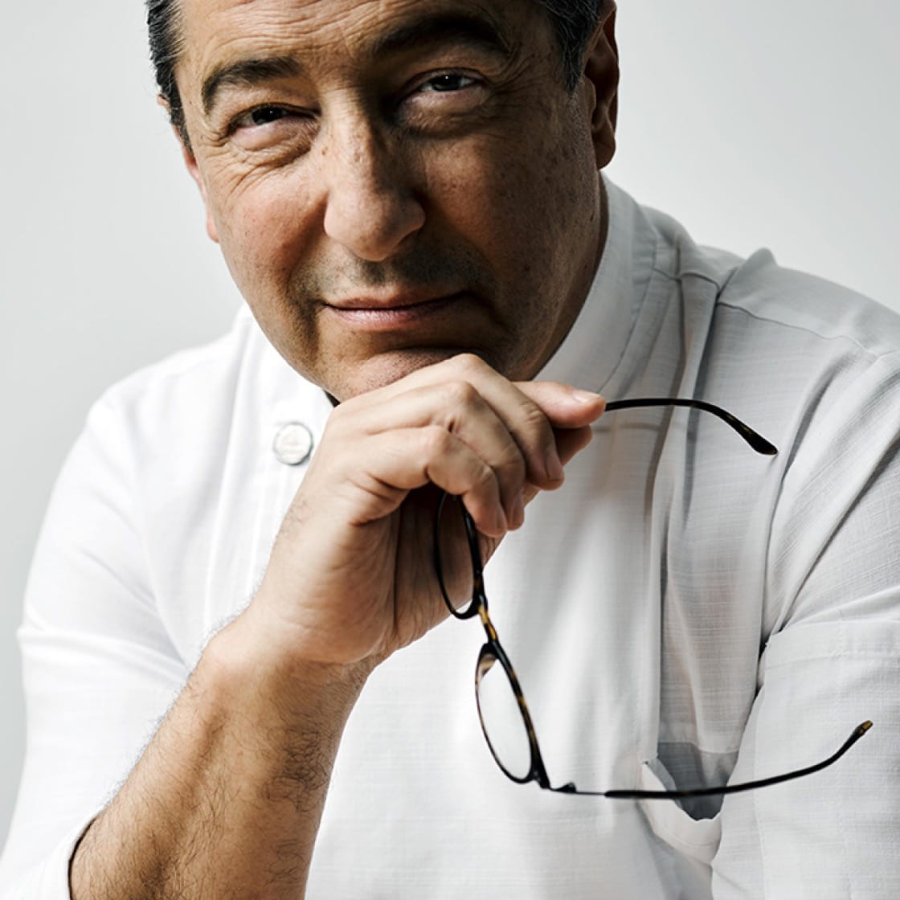
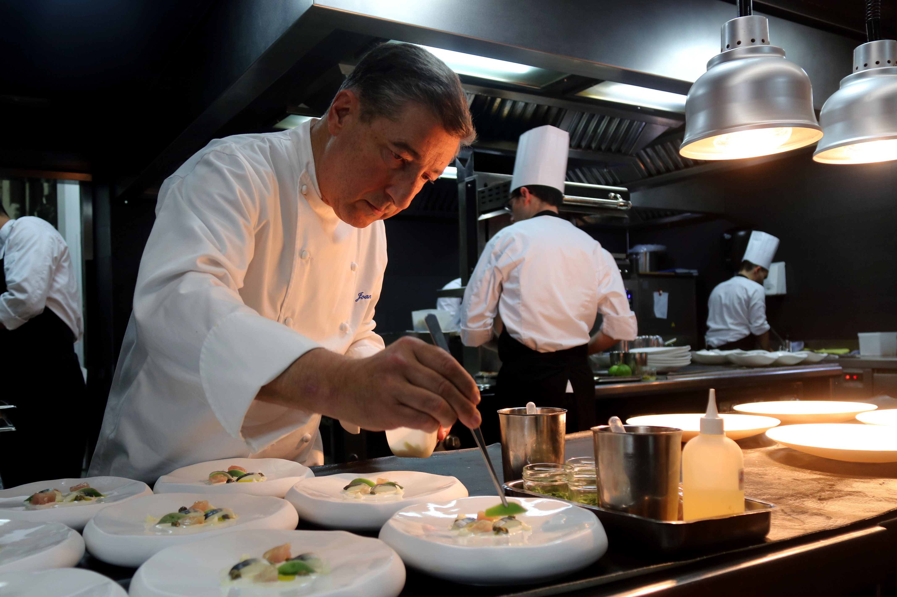
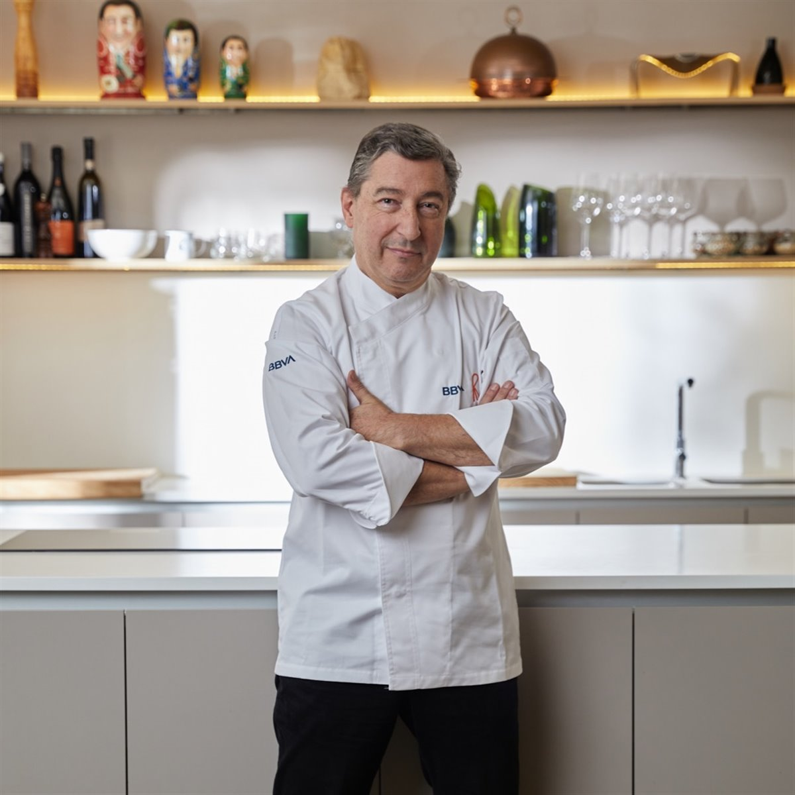
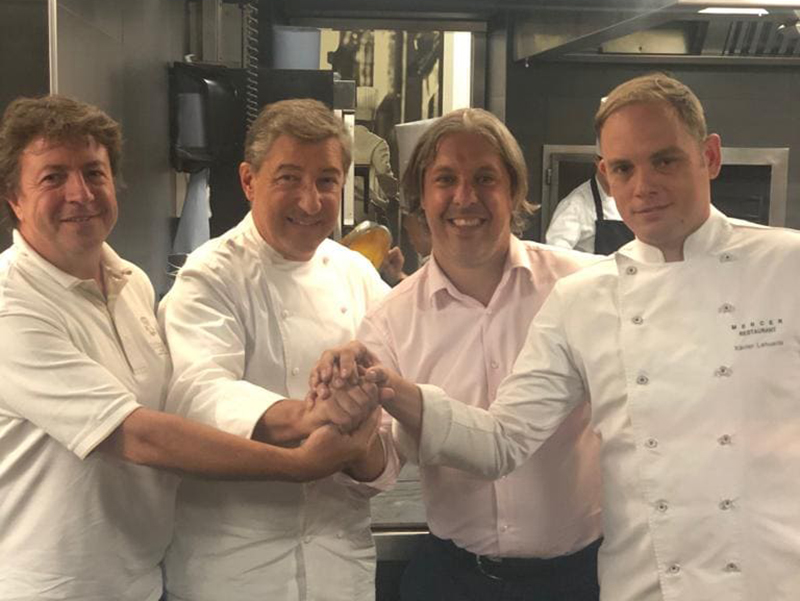
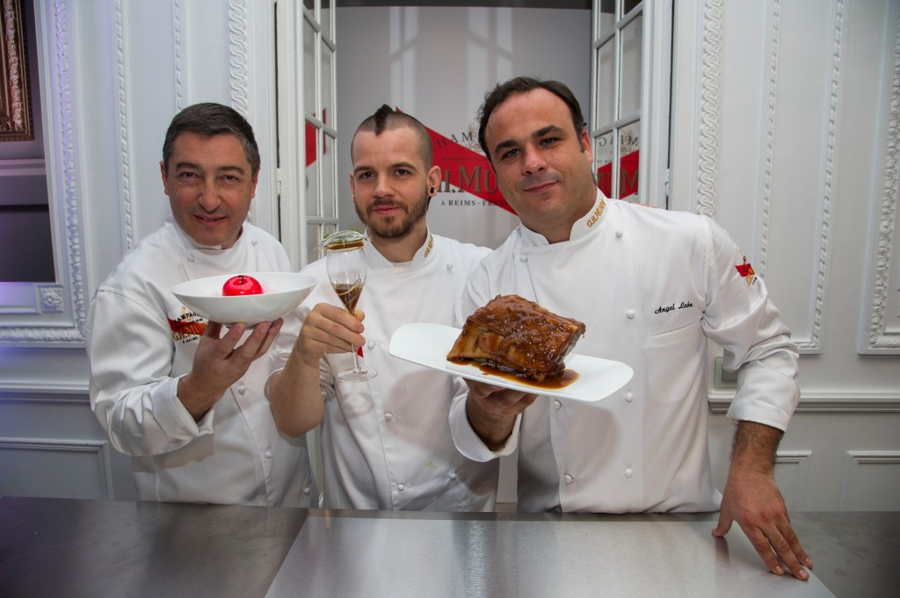
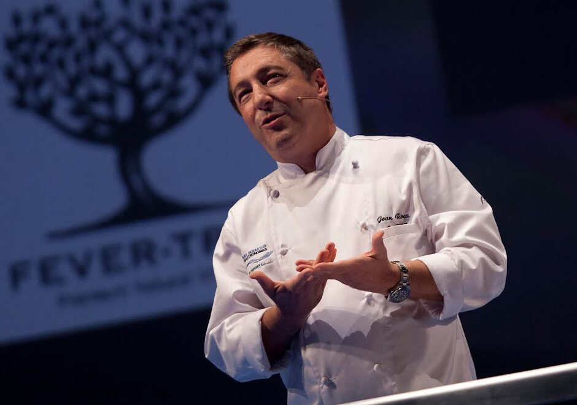
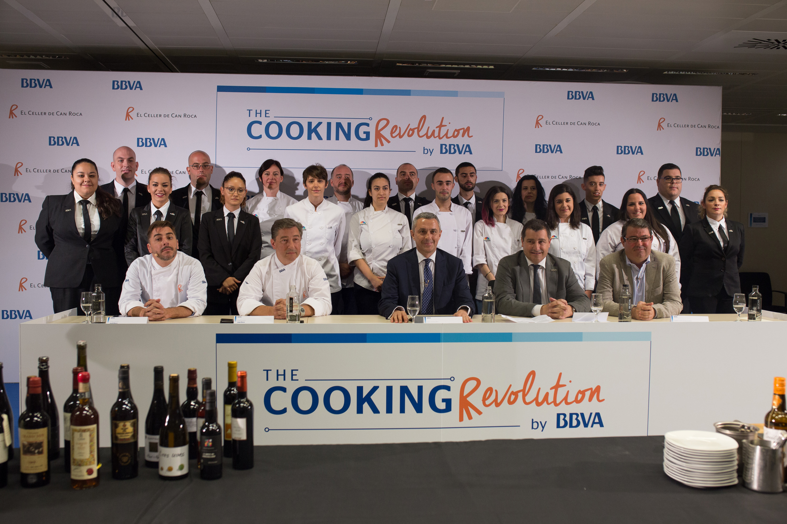

PERFÍL DEL CHEFF JOAN ROCA

Joan Roca, nacido en Girona, España, en 1964, no solo es un chef, sino un artista culinario que ha
revolucionado la gastronomía mundial. Desde sus inicios en el restaurante familiar, Can Roca, junto a sus
hermanos Josep y Jordi, Joan ha demostrado una pasión inquebrantable por la cocina, una creatividad sin
límites y un profundo respeto por las tradiciones culinarias.
Su formación en la Escuela de Hostelería de Girona le proporcionó las bases técnicas, pero fue su experiencia en el negocio familiar la que encendió su llama por la alta cocina. Junto a sus hermanos, Joan comenzó a explorar nuevos horizontes culinarios, fusionando técnicas tradicionales con vanguardistas, creando platos que no solo deleitaban el paladar, sino que también despertaban emociones y contaban historias.
En 1986, los hermanos Roca abrieron El Celler de Can Roca, un pequeño restaurante que se convertiría en un referente mundial de la gastronomía. Bajo la dirección de Joan como chef principal, El Celler de Can Roca ha recibido numerosos reconocimientos, incluyendo tres estrellas Michelin, el máximo galardón en la industria culinaria.
Un enfoque innovador y emocional
La cocina de Joan Roca se caracteriza por su innovación, creatividad y profundo respeto por los ingredientes. Su filosofía se basa en la búsqueda de la esencia de cada producto, utilizando técnicas culinarias de vanguardia para realzar su sabor y textura natural.
Joan no solo busca crear platos deliciosos, sino también experiencias gastronómicas únicas que emocionen a sus comensales. Cada plato es una obra de arte, cuidadosamente elaborada con atención al detalle y a la estética.
Un legado de excelencia y compromiso
Joan Roca es un referente para cocineros de todo el mundo. Su influencia se extiende más allá de la cocina, inspirando a personas de diversos ámbitos con su pasión, creatividad y compromiso con la excelencia.
Además de su labor en El Celler de Can Roca, Joan Roca participa activamente en diversos proyectos educativos y sociales. Es un firme defensor de la gastronomía sostenible y de la importancia de preservar las tradiciones culinarias.
Un futuro brillante
Joan Roca continúa su incansable búsqueda de la perfección culinaria, explorando nuevos territorios y desafiando los límites de la creatividad. Su pasión por la cocina y su compromiso con la excelencia lo convierten en un maestro culinario que seguirá inspirando y deleitando al mundo durante muchos años más.
Más allá de la cocina
Joan Roca es un hombre de familia dedicado, un amigo leal y un apasionado de la vida. Disfruta de la música, la lectura y viajar por el mundo, siempre en busca de nuevas experiencias y conocimientos que enriquezcan su vida y su cocina.
Un ejemplo de inspiración
La historia de Joan Roca es un ejemplo de lo que se puede lograr con pasión, dedicación y trabajo duro. Su talento excepcional y su incansable búsqueda de la excelencia lo han convertido en uno de los chefs más reconocidos y admirados del mundo.
Un mensaje para las nuevas generaciones
Joan Roca anima a las nuevas generaciones a seguir sus sueños con pasión y determinación. Les recuerda que la cocina es un arte que requiere esfuerzo, dedicación y creatividad, pero que también ofrece la oportunidad de crear experiencias únicas que deleitan y emocionan a los demás.
Un futuro prometedor
El futuro de la gastronomía está en buenas manos con chefs como Joan Roca. Su visión innovadora, su compromiso con la excelencia y su pasión por compartir su conocimiento con las nuevas generaciones garantizan que la gastronomía seguirá evolucionando y deleitando al mundo durante muchos años más.
Su formación en la Escuela de Hostelería de Girona le proporcionó las bases técnicas, pero fue su experiencia en el negocio familiar la que encendió su llama por la alta cocina. Junto a sus hermanos, Joan comenzó a explorar nuevos horizontes culinarios, fusionando técnicas tradicionales con vanguardistas, creando platos que no solo deleitaban el paladar, sino que también despertaban emociones y contaban historias.
En 1986, los hermanos Roca abrieron El Celler de Can Roca, un pequeño restaurante que se convertiría en un referente mundial de la gastronomía. Bajo la dirección de Joan como chef principal, El Celler de Can Roca ha recibido numerosos reconocimientos, incluyendo tres estrellas Michelin, el máximo galardón en la industria culinaria.
Un enfoque innovador y emocional
La cocina de Joan Roca se caracteriza por su innovación, creatividad y profundo respeto por los ingredientes. Su filosofía se basa en la búsqueda de la esencia de cada producto, utilizando técnicas culinarias de vanguardia para realzar su sabor y textura natural.
Joan no solo busca crear platos deliciosos, sino también experiencias gastronómicas únicas que emocionen a sus comensales. Cada plato es una obra de arte, cuidadosamente elaborada con atención al detalle y a la estética.
Un legado de excelencia y compromiso
Joan Roca es un referente para cocineros de todo el mundo. Su influencia se extiende más allá de la cocina, inspirando a personas de diversos ámbitos con su pasión, creatividad y compromiso con la excelencia.
Además de su labor en El Celler de Can Roca, Joan Roca participa activamente en diversos proyectos educativos y sociales. Es un firme defensor de la gastronomía sostenible y de la importancia de preservar las tradiciones culinarias.
Un futuro brillante
Joan Roca continúa su incansable búsqueda de la perfección culinaria, explorando nuevos territorios y desafiando los límites de la creatividad. Su pasión por la cocina y su compromiso con la excelencia lo convierten en un maestro culinario que seguirá inspirando y deleitando al mundo durante muchos años más.
Más allá de la cocina
Joan Roca es un hombre de familia dedicado, un amigo leal y un apasionado de la vida. Disfruta de la música, la lectura y viajar por el mundo, siempre en busca de nuevas experiencias y conocimientos que enriquezcan su vida y su cocina.
Un ejemplo de inspiración
La historia de Joan Roca es un ejemplo de lo que se puede lograr con pasión, dedicación y trabajo duro. Su talento excepcional y su incansable búsqueda de la excelencia lo han convertido en uno de los chefs más reconocidos y admirados del mundo.
Un mensaje para las nuevas generaciones
Joan Roca anima a las nuevas generaciones a seguir sus sueños con pasión y determinación. Les recuerda que la cocina es un arte que requiere esfuerzo, dedicación y creatividad, pero que también ofrece la oportunidad de crear experiencias únicas que deleitan y emocionan a los demás.
Un futuro prometedor
El futuro de la gastronomía está en buenas manos con chefs como Joan Roca. Su visión innovadora, su compromiso con la excelencia y su pasión por compartir su conocimiento con las nuevas generaciones garantizan que la gastronomía seguirá evolucionando y deleitando al mundo durante muchos años más.
Galería de eventos realizados





